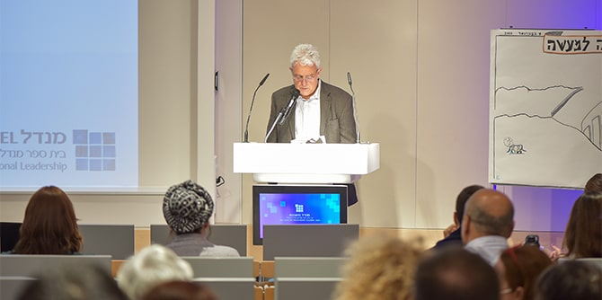

Implementing Inclusion: Schools as a Framework for an Inclusive Culture
2022-02-08
The group exercise of Cohort 29 was conducted in cooperation with the Ministry of Education and the Jerusalem Education Administration 
This year’s group exercise of the Mandel School for Educational Leadership focused on formulating recommendations for bolstering schools as frameworks for inclusion and was conducted in cooperation with the Israeli Ministry of Education’s division for implementing the inclusion and integration reform and with the Jerusalem Education Administration. As part of the exercise, the fellows of Cohort 29 spent around a month researching the implementation of Israel’s special education law, to which a major amendment was introduced in 2018 with the aim of advancing the integration and inclusion of children with special needs in regular schools. (Prior to that, children with special needs were almost always segregated in special education schools). The recommendations that emerged from their research were presented at an event held at the Mandel School on February 8, 2022.
​Dalit Stauber, director general of the Israeli Ministry of Education (Photo: Naveh Ben Shmuel)
During the exercise, the fellows engaged in a process of in-depth learning that included study of research literature, field trips to educational institutions, and review of relevant reports and documents. They also conducted dozens of interviews with officials in positions relevant to inclusion and integration in the education system, including chairs of eligibility committees, senior managers in the Ministry of Education, parents, inclusion assistants, school principals, teachers, and leaders of civil society organizations working to advance the rights of people with disabilities. At the conclusion of this learning process, the fellows presented their recommendations in a document that was presented to the various stakeholders.
The recommendations were based on the principle that regular schools must be strengthened in order to serve as inclusive educational institutions that have optimal systemic capability to provide excellent educational services to all children, including children with special needs. The fellows formulated the following main recommendations to achieve this goal:
Strengthen the expertise and expand the internal capabilities of all schools to include students with special needs by granting schools managerial and economic flexibility and autonomy, establishing in-school inclusion centers, providing professional development, and creating experts in inclusion in schools.
Create a school budgeting model that is based on an “inclusion index,” which will lead to changes in school attitudes toward inclusion. This model will include reducing the number of students in inclusion classes, providing measurement and evaluation incentives related to the inclusion index, and creating a dynamic structure for inclusive classrooms.
Change the conditions in which schools operate, so as to expand the schools’ capabilities and approaches to inclusion via structural changes, networking, the creation of multi-system mechanisms for addressing social, emotional, and behavioral problems, and more.
The recommendations were presented at an event attended by
Dalit Stauber, the director general of the Ministry of Education;
Professor Jehuda Reinharz, the president and CEO of the Jack, Joseph and Morton Mandel Foundation;
Moshe Vigdor, director general of the Mandel Foundation–Israel; Yoav Zimran, the head of the Jerusalem Education Administration; and
Miri Navon, the senior director of the Ministry of Education’s division for the implementation of Israel’s inclusion and integration reform.

Danny Bar Giora, director of the Mandel School for Educational Leadership (Photo: Naveh Ben Shmuel)
Danny Bar Giora, director of the Mandel School for Educational Leadership, spoke about the topic chosen for the group exercise and about the fellows’ work during their intensive month of study: “It’s no secret that the issue of inclusion is very close to my heart. As you will hear in just a moment [during the presentation], the fellows have completed a full Mandel study cycle, starting with questions of ethics, social values, and the perception of good that underlie the change in the Special Education Law, through fearless inquiry into legislation, budgeting, and autonomy, and all this, alongside very concrete and practical ideas for improving the process of implementing the law. Dear fellows, you have made a very clear statement, that the school is the central and most important arena [for inclusion] that must be strengthened and supported, and I, of course, completely agree with you on this.” In conclusion, Danny thanked the representatives of the Ministry of Education, the Jerusalem Education Administration, and all their staff members, who opened doors and enabled the fellows of Cohort 29 to participate in a meaningful process of re-examining the implementation of the amendment to the Special Education Law.
Dalit Stauber, director general of the Ministry of Education and former faculty member of the Mandel School for Educational Leadership, responded to the booklet of recommendations produced by the fellows as follows: “When I read the document that Danny sent me, the Mandel DNA could be seen immediately: it contains a vision, research-based learning, and translation into practice. This DNA will continue to serve you wherever you go.” Regarding the recommendations themselves, she added: “You have analyzed the problems and you proposed solutions that I am embracing warmly. We will work intensively to assess which of these recommendations [can be implemented] in the short term. Some recommendations are for immediate action and do not require a budget; some are long-term processes that need more work. But I see this [document] as a working paper that will be put into action from tomorrow morning.” Dalit Stauber also related to other strategic aspects, which she said have a direct impact on the education system’s capacity for inclusion, and which the Ministry of Education is currently working on. These include transferring daycare centers for ages 0–3 to the administration of the Education Ministry, and taking significant steps to give school principals greater financial and pedagogical flexibility.
Miri Navon, senior director of the Ministry of Education’s division for the implementation of Israel’s inclusion and integration reform, thanked the fellows for their work, and said: “Clearly, strengthening schools and kindergartens in the regular education system, and bolstering their capacity for better inclusion is vital…. The formulation of a school inclusion index is a significant breakthrough, and we must think about how to adopt it and adapt it [for use in the field].”
“Inclusion is about the school, not about special education,” said
Yoav Zimran, head of the Jerusalem Education Administration. “Inclusion is first and foremost the ability to include every child, and every child is special education. We are tested on our ability to adapt the individual contract between me – the teacher – and the child, as well as between children. And this has to be part of the discourse in the school.”

 Dalit Stauber, director general of the Israeli Ministry of Education (Photo: Naveh Ben Shmuel)
Dalit Stauber, director general of the Israeli Ministry of Education (Photo: Naveh Ben Shmuel)


{kind=link}
{kind=link}
{kind=link}
{kind=link}
{kind=link}